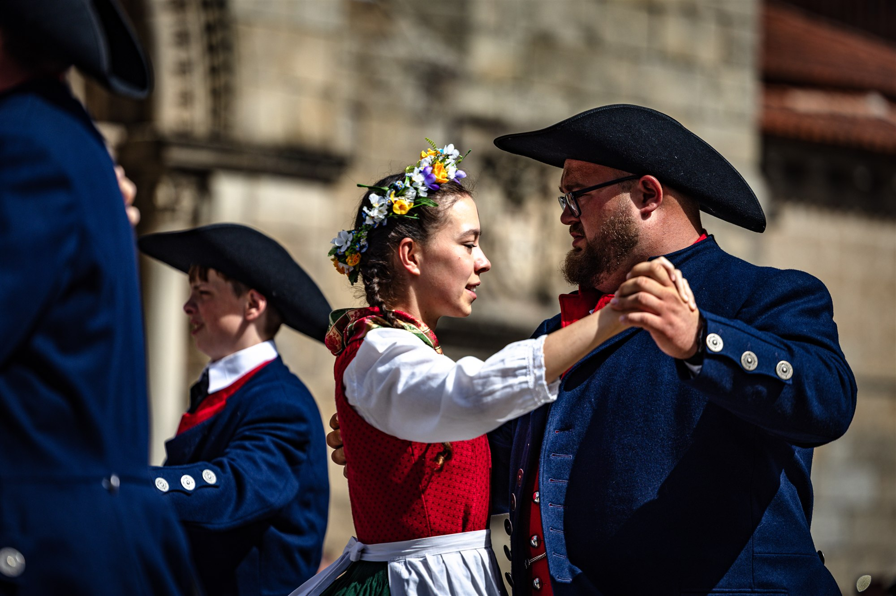
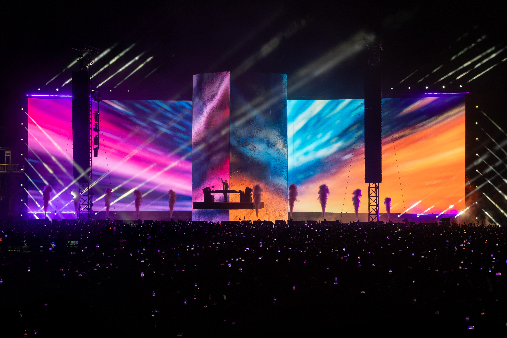
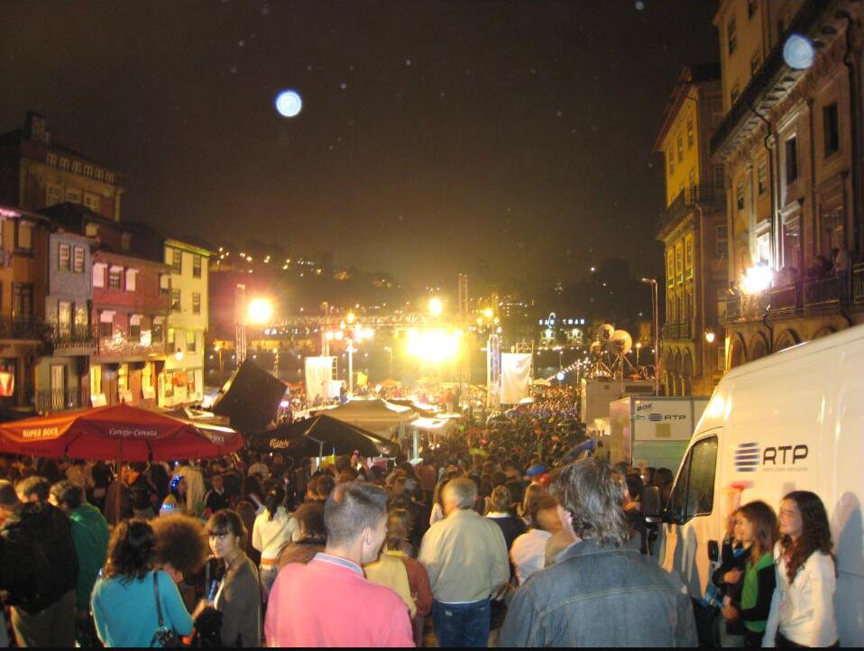
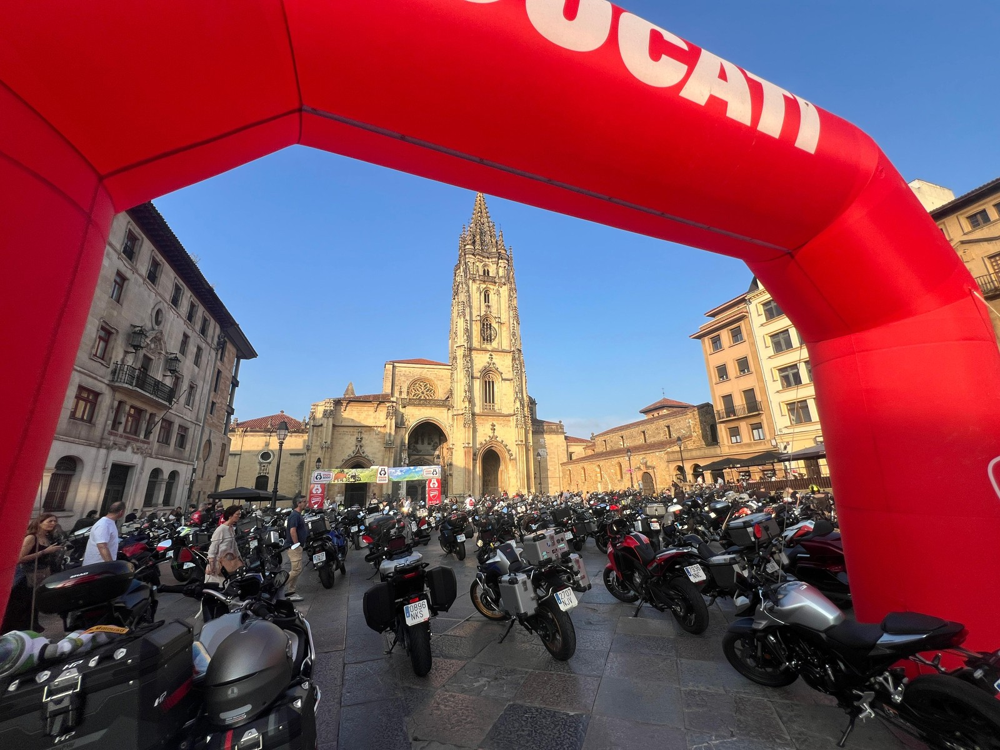
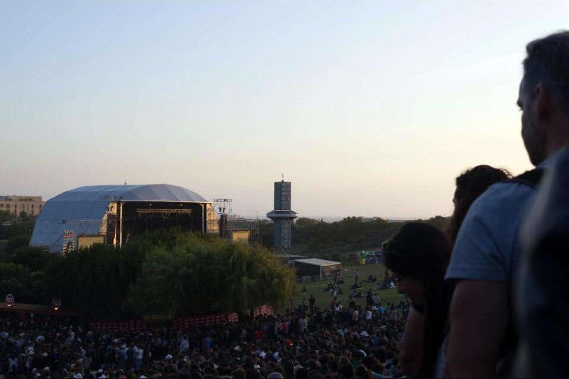
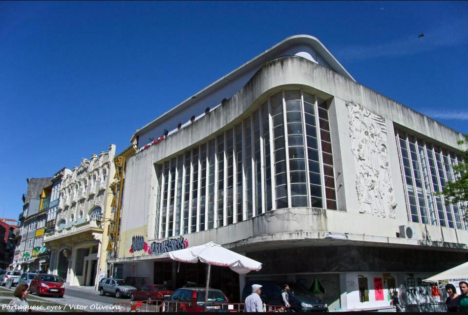
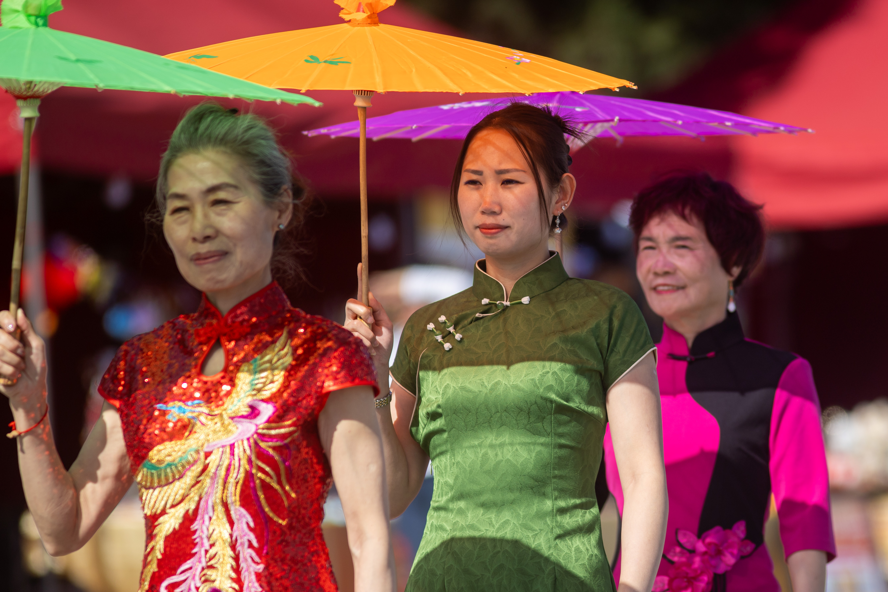

When stadiums and arenas host more than sport — concerts, festivals and the cultural events around them.

The 13th edition ran from 3 to 10 August 2026, bringing groups representing seven nationalities to venues across Guimarães, with Image Media correspondent Paulo Nomade documenting the festival.
Read more →
David Guetta played Parque Papa Francisco in Loures on 2 August 2026 with "The Monolith," a large-scale production built around a central LED structure.
Read more →
Plastic hammers, grilled sardines and a fireworks show stretched across a wider stretch of the Douro than ever before.
Read more →✎
Ducati served as official ambassador brand as riders gathered at Plaza de la Catedral for the non-competitive 1,000km, 500km and 300km challenge across Asturias.
Read more →✎
Gorillaz, Massive Attack and The xx headline a 55-artist bill across four days.
Read more →✎
One of Europe's longest-running genre film festivals returns Feb 27 - Mar 8 in a landmark Art Deco cinema.
Read more →✎
Three days at Madrid Río brought qipao workshops, live guzheng and flamenco guitar, and free concerts under "Dos culturas, un solo latido."
Read more →✎